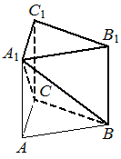

Авторский разбор и аудит предварительны; внешней экспертизы нет.
Модель автора: claude-opus-5-5 (opus; effort=low); в основных частотах: True ·
Впишите правильный ответ.
| Дана правильная треугольная призма , площадь основания которой равна 4, а боковое ребро равно 6. Найдите объём многогранника, вершинами которого являются точки , , , , . |  |
КЭС: 7.3 Многогранники
16
| ID / вход | Действие | Результат | Локальные KC |
|---|---|---|---|
| s1 · condition | Вычислить объём призмы как произведение площади основания на высоту (боковое ребро правильной призмы перпендикулярно основанию) | V_призмы = 4·6 = 24 | kc1 |
| s2 · condition | Представить многогранник BCA1B1C1 как призму без пирамиды A1ABC | V = V_призмы − V(A1ABC) | kc2 |
| s3 · condition | Вычислить объём пирамиды A1ABC с основанием ABC и высотой AA1 | V(A1ABC) = (1/3)·4·6 = 8 | kc3 |
| s4 · s1, s2, s3 | Вычесть объём пирамиды из объёма призмы | V = 24 − 8 = 16 | kc2 |
[
{
"id": "m1",
"name": "Дополнение до призмы: объём призмы минус объём отсечённой пирамиды",
"step_ids": [
"s1",
"s2",
"s3",
"s4"
]
}
]Вход: площадь основания и высота (боковое ребро прямой призмы); операция: V = S·h; применимо к прямой призме, для наклонной нужна высота.
{
"local_kc_id": "kc1",
"status": "match",
"catalog_kc_id": "literal_19971b364ca1",
"evidence": [
{
"ref": "step:s1:action",
"quote": "Вычислить объём призмы как произведение площади основания на высоту (боковое ребро правильной призмы перпендикулярно основанию)"
},
{
"ref": "step:s1:result",
"quote": "V_призмы = 4·6 = 24"
}
],
"context_refs": [
"condition"
],
"alternatives_checked": [
{
"catalog_kc_id": "pyramid_volume",
"reason": "относится к пирамиде с множителем 1/3, а не к призме"
}
],
"rationale": "Операция V=S·h для призмы; высота обоснована перпендикулярностью бокового ребра правильной (прямой) призмы, что совпадает с оговоркой определения о перпендикулярной высоте.",
"proposal": null,
"blocking": false,
"issue_ids": []
}Вход: многогранник, являющийся частью известного тела; операция: представить его как разность (или сумму) тел с известными объёмами и сложить/вычесть объёмы; части не должны перекрываться.
{
"local_kc_id": "kc2",
"status": "new_candidate",
"catalog_kc_id": null,
"evidence": [
{
"ref": "step:s2:action",
"quote": "Представить многогранник BCA1B1C1 как призму без пирамиды A1ABC"
},
{
"ref": "step:s2:result",
"quote": "V = V_призмы − V(A1ABC)"
},
{
"ref": "step:s4:result",
"quote": "V = 24 − 8 = 16"
}
],
"context_refs": [
"condition",
"image:assets/9b32a0d521269416ad4dd0c7.png"
],
"alternatives_checked": [
{
"catalog_kc_id": "literal_0cd75b4548b3",
"reason": "распознавание призмы по граням, а не разложение объёма тела на непересекающиеся части"
},
{
"catalog_kc_id": "literal_19971b364ca1",
"reason": "вычисляет объём призмы, но не связывает объём многогранника с объёмами частей"
},
{
"catalog_kc_id": "pyramid_volume",
"reason": "формула объёма пирамиды, не аддитивность объёма"
}
],
"rationale": "В каталоге нет узла об аддитивности объёма: представить тело как разность/сумму непересекающихся тел с известными объёмами. Действие наблюдается в s2 (декомпозиция) и s4 (вычитание); вычитание 24−8 — тривиальная арифметика внутри того же действия.",
"proposal": {
"name": "Находить объём многогранника разбиением или дополнением",
"definition": "Представить многогранник как объединение или разность непересекающихся (кроме границ) тел с известными объёмами и сложить/вычесть их объёмы, обосновав, что части составляют всё тело без перекрытий."
},
"blocking": false,
"issue_ids": []
}Вход: площадь основания и высота пирамиды; операция: V = S·h/3; высота — расстояние от вершины до плоскости основания.
{
"local_kc_id": "kc3",
"status": "match",
"catalog_kc_id": "pyramid_volume",
"evidence": [
{
"ref": "step:s3:action",
"quote": "Вычислить объём пирамиды A1ABC с основанием ABC и высотой AA1"
},
{
"ref": "step:s3:result",
"quote": "V(A1ABC) = (1/3)·4·6 = 8"
}
],
"context_refs": [
"condition",
"step:s1:action"
],
"alternatives_checked": [
{
"catalog_kc_id": "literal_19971b364ca1",
"reason": "формула призмы без множителя 1/3"
}
],
"rationale": "Тетраэдр A1ABC с основанием ABC (площадь 4) и высотой AA1=6, перпендикулярной основанию по s1; применено V=S·h/3 — полное соответствие.",
"proposal": null,
"blocking": false,
"issue_ids": []
}[]
[]
{
"author_path": "data/annotation/runs/2026-11-07-fipi-team-bogdan108-051-150/raw/author/370392.json",
"auditor_path": "data/annotation/runs/2026-11-07-fipi-team-bogdan108-051-150/raw/auditor/370392.json",
"accepted_after_review": null
}